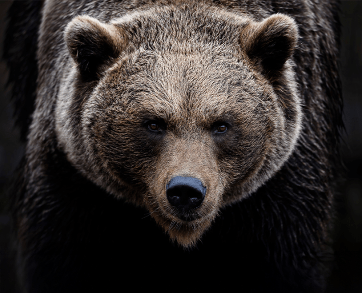
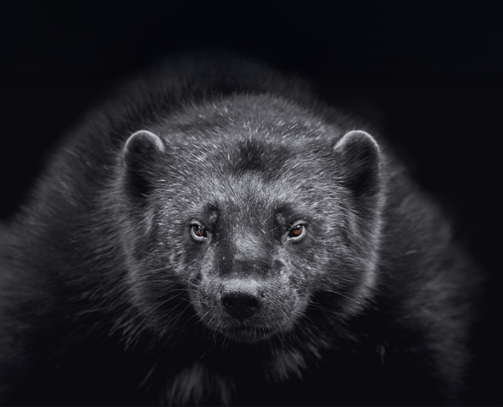
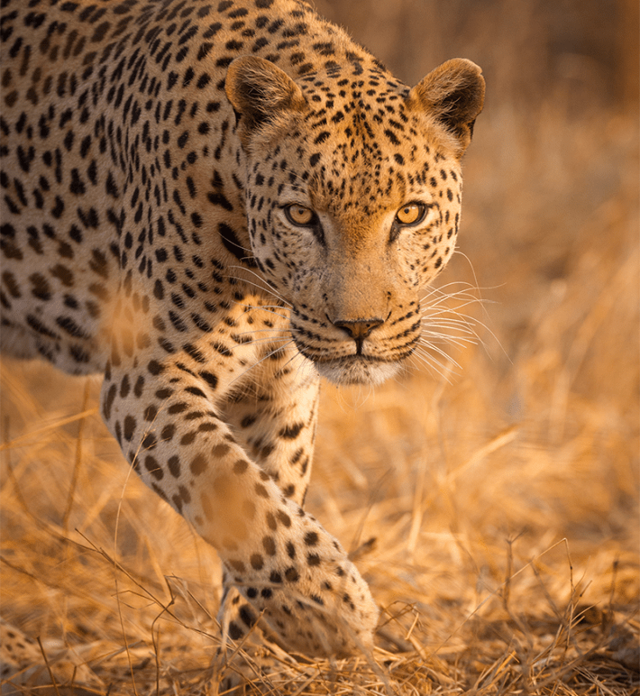

Alone in a canoe, Val Plumwood was gliding along a channel in tropical Australia’s Kakadu National Park in 1985 when a huge crocodile rammed her. She paddled to the shore as fast as she could, but the crocodile struck the canoe again and again. A thought flashed through Plumwood’s mind: “I am prey.” She grabbed hold of an overhanging tree, hoping to escape onto land.
“Before my foot even tripped the first branch, I had a blurred, incredulous vision of great toothed jaws bursting from the water,” Plumwood wrote. “Then I was seized between the legs in a red-hot pincer grip and whirled into the suffocating wet darkness.” The crocodile rolled Plumwood underwater, trying to drown her.
“The roll was a centrifuge of boiling blackness that lasted for an eternity, beyond endurance, but when I seemed all but finished, the rolling suddenly stopped. My feet touched bottom, my head broke the surface, and, coughing, I sucked at air, amazed to be alive. The crocodile still had me in its pincer grip between the legs. I had just begun to weep for the prospects of my mangled body when the crocodile pitched me suddenly into a second death roll.”
Plumwood surfaced only to be dunked for the third time by the crocodile. But when the croc rolled her above the water yet again, he briefly loosened his jaws, and she managed to scramble to a muddy bank and claw her way up it. After hours of painful struggle through the bush, a park ranger heard her cries for help and, remarkably, she was rescued.
Humans with their laughably blunt teeth and soft bodies are ill-equipped to defend themselves.
Plumwood was an eco-philosopher, deeply attuned to the connectedness of human beings with the natural world. Her survival allowed her to give the rest of us one of the most riveting accounts of what it means to be prey.
“I glimpsed a shockingly indifferent world in which I had no more significance than any other edible being,” Plumwood wrote. “The thought, ‘This can’t be happening to me, I’m a human being. I am more than just food!’ was one component of my terminal incredulity. It was a shocking reduction, from a complex human being to a mere piece of meat.”
We may not think about being prey today because humans are the most successful predator on Earth—except for those occasional times when we’ve been taken down by a grizzly bear, lion, hyena, crocodile, or python. Yes, python. As recently as 2024, an Indonesian farmer, reported missing the day before, was exhumed from inside a 16-foot python. (After killing their victims by suffocation, these huge constrictors can dislocate their jaws and swallow a person whole, even if that prey item is larger than the reptile’s head.) But hominins, which includes us, have been prey for most of our existence, dating from when we broke from other primates 7 million years ago, a troubled predator-prey relationship that didn’t end just because we became human.
Being the hunted has left a deep impact on our personal and collective memories, with imprints that have, in the language of evolutionary biology, been “conserved,” not only in modern mythology but possibly in our genomes as well. It likely drove our ability to control fire, develop ever-more deadly tools, find security in social groups, even walk upright and speak. It also had its downsides: Our innate sense of fear, compounded by stress, which can waylay our bodies and brains, likely evolved from us being mere pieces of meat.
It wasn’t always thus in the annals of human-evolution research. A drive to kill other animals (as well as each other) was considered key to our past and present. “Man the Hunter” and even “Man the Murderous Cannibal” were ascendant evolutionary tropes when it came to hypothesizing about our earliest inclinations, in popular as well as scholarly thought.
This perspective was largely initiated by the South African anthropologist Raymond Dart, famous for having discovered a species of Australopithecus (Australopithecus africanus), which lived 3 million to 2 million years ago. Dart’s hyperventilating insistence on our murderous, war-prone prehistoric inclinations was reflected in such influential writings as The Predatory Transition from Ape to Man (1953), and which inspired popular (and grossly misleading) books such as Robert Ardrey’s African Genesis (1977).

VAL & BIRUBI:Val Plumwood survived a crocodile attack in 1985 and gave us one of the most riveting accounts of what it means to be prey. The Australian eco-philosopher died from a stroke in 2008. Here she cuddles her foster wombat, Birubi. Courtesy of Plumwood Inc.
Dart also discovered an A. africanus skull designated the “Taung child,” who died at age 3 or 4. Dart dramatically proclaimed the child to have been an early victim of human murder and cannibalism. Subsequent analysis by anthropologist Lee Berger in 2006 revealed that the skull shows talon marks around the eye sockets as well as indentations on the base of the skull consistent with injuries incurred by nonhuman primates who are carried off and eaten by eagles and other large predatory birds.
Nonetheless, the perspective of our ancestors being vicious predators—perpetrators instead of victims—was enthusiastically adopted, in part because it was consistent, as Washington University anthropologist Robert Sussman argues, with “a basic Judeo-Christian ideology of man being inherently evil, aggressive, and a natural killer.” Sussman points out that “to some degree it still dominates much thought by the public as well as professionals.”
Of late, however, the scientific balance has been shifting, partly inspired by the 2005 book, Man the Hunted, in which Sussman and anthropologist Donna Hart pointed out that most primates are prey rather than predators, a pattern seen in A. africanus like “Lucy” and her descendants.
“The crocodile had me in its pincer grip and pitched me suddenly into a death roll.”
Sussman and Hart noted that A. afarensis was an “edge species,” inhabiting borderlines between trees and savanna, likely reverting to the former to sleep and to escape from huge ground-dwelling predators, which were roughly 10 times more abundant than they are today. These included cave lions, dire wolves, hyenas as big as bears, and bears as enormous as North American short-faced bears, which stood 11 feet tall on their hind legs. Tree-climbing ability would likely have been key to survival in such a tough neighborhood.
Moreover, recent fossils have been suggestive that our ancestors were on the menu for animals, although as with nearly all such data, the sample sizes are small. There’s OH-8, a Homo habilis specimen dated at 1.8 million years old, discovered by the Leakeys in Olduvai Gorge, Tanzania, and whose left foot and detached leg show extensive tooth marks from a crocodile. Plumwood’s experience, it appears, wasn’t unique. Ditto for another victim—labelled OH-35—who was evidently dismembered by one or more crocs, and whose other skeletal parts had been chewed by a leopard-sized carnivore. (It’s also possible, of course, that these early meals involved scavenging on carrion rather than killing live prey.)
In 2025, scientists from the Institute of Evolution in Africa, Rice University, and the Archaeological and Paleontological Museum of Madrid published computer analyses of Homo habilis fossils (OH-7 and OH-65) that showed with “unprecedented reliability” that our ancestors of 2 million to 1.5 million years ago were food for leopards. The authors argue the new finding is significant because Homo habilis, who made stone tools and ate meat, has long been regarded as the turning point from prey to predator in our evolutionary history. In fact, they write, Homo habilis was “still more prey than predator,” and “unable to fend off top predators from their kills.”

Photo by ambquinn / Shutterstock
Where does this leave us today, experiencing our predator-free lives? We’re a peculiar species, in our anatomy no less than our intellectual accomplishments. Paleoanthropologists have been at pains to figure out how some of our notable traits evolved. Rebranding ourselves as hunted rather than exclusively hunter can help explain those key traits.
Take upright posture. Standing on two vertical pillars while nervously scanning the horizon would have given prehumans a literal leg-up when it came to providing an early warning system. After all, it wasn’t just leopards and those saber-toothed terrors that stalked our early environments, but also dire wolves and a whole slew of other fearsome potential perps. Of course, standing upright might have made us more visible to these dangerous predators, but it also could have provided an opportunity to intimidate them. Even today, hikers who encounter a cougar are advised to make themselves as big as possible, to stand up tall, wave their arms, and shout. Did the savanna ring with the yells of our terrestrial antecedents?
Then there are tools. It used to be thought that those much-lauded big brains of ours were a prerequisite for using and, more so, making them. No longer. In the 1960s, Jane Goodall made the pioneering discovery that chimps not only use sticks to fish for termites, but they first smooth them by stripping away twigs and leaves. Fossil evidence shows that stone tools were constructed and employed as long ago as 3.3 million years (when ancestral hominin brains weren’t particularly impressive). It’s clear that our forebears were not only stone chippers but also makers of obsidian-tipped javelins around 280,000 years ago, as well as being likely stick sharpeners, the latter first appearing about 300,000 to 400,000 years ago, apparently whittled by early Neanderthals and Homo heidelbergensis. Tools and weapons certainly helped our predecessors fill their bellies and maybe defend against other hominins. But what about also defending themselves to keep from filling the bellies of their predators?
Once we consider the likely impact of being preyed upon by other creatures no less than preying upon them, many other fundamental human traits take on new meaning. Early communication by gesture and words? Quite likely helpful when it came to group cohesion, sharing information as to food sources along with water holes during drought, achieving social dominance, and the like.
Oxford University’s Robin Dunbar has made the case that speech originated as cohesion-generating social gossip. But don’t ignore the payoff of being able to broadcast a prompt heads-up when a predator appears.

Photo by Thomas Marx / Shutterstock
Today, many animal species, from birds to primates, use remarkably precise alarm calls to warn of danger. Vervet monkeys employ three different kinds, each predator-specific: one for snakes (the monkeys look down), one for eagles (up), and one for big cats (clamber into the trees). Would early humans have been less vocally accomplished? Is it unreasonable to hypothesize that predator warning calls were among the first verbalisms used by our hominin ancestors? Imagine yourself back in those early days: What would you consider more important, sharing a bit of gossip or being warned that a saber-toothed cat is around the corner?
And consider fire. Undoubtedly beneficial when it comes to cooking our own food, making tough carbohydrate-based plant matter as well as animal protein more digestible, nutritional payoffs that, as anthropologist Richard Wrangham has proposed, may have set the stage for our rapid brain development. Imagine our great, great Homo erectus grandparents sitting cozily around a mid-Pleistocene fire, roughly 1 million years ago, cooking dinner and swapping lies. Isn’t it likely that one thing that made those fires so cozy is that they probably kept predators away?
Even our lauded intelligence and cooperative sociality, which doubtless evolved for many different reasons, would also have been more than trivially useful for hominids and hominins when it came to outsmarting, or at least surviving, our hungry natural predators. (Quick note: “hominid” refers to any member of the great apes—gibbons, orangutans, chimps, gorillas, and humans, as well as their fossil ancestors, while “hominin” refers more narrowly to species in the direct human line. So, all hominins are hominids, but not vice versa.)
Like most of our primate relatives, human beings with their receding jaws, laughably blunt teeth, and soft bodies, are ill-equipped to defend themselves bodily. Here’s where sociality pays off. A consistent pattern is that relatively defenseless animals are especially likely to live in groups, which facilitates collective defense as well as providing more eyes, ears, and noses to detect danger and sometimes to visually confuse predators when numerous potential victims suddenly disperse. Notably, every species of diurnal, terrestrial primate is group-living. That includes us.
Some years ago, I was hiking solo in the North Cascades of Washington state when I was surprised to see an odd-looking mammal, strangely flattened horizontally and walking in the snow with a curious rolling motion. A wolverine! It was the first and only time I’ve seen one in the wild. To my subsequent embarrassment, rather than reach for my camera, I reached for my ice ax. Granted that wolverines are known pound for pound to be among the most ferocious mammals, allegedly sometimes chasing grizzlies off a carcass. But they rarely weigh more than 30 pounds and have never been known to attack a human being. What possessed me?
John Byers, a professor of biology at the University of Idaho, spent decades studying pronghorns, the fastest terrestrial creatures in North America. Noting there currently aren’t any super-fast predators in North America, Byers hypothesized in his book, Built for Speed, that the dazzling velocity of these animals (incidentally, they’re not really “antelopes,” but a kind of goat) is due to them being haunted by the “ghosts of predators past,” now-extinct dire wolves and oversized cats. We’re similarly haunted, which probably explains why a trained biologist gave in to a momentary sense that I was somehow at risk: haunted by the ghosts of predators past.

Photo by Stu Porter / Shutterstock
The impulse to fight or flee is deeply ingrained in our biology by way of a response system involving the amygdala (the brain’s “fear center”) and the hypothalamus, which, among other things, encodes memories of other fear-inducing events, providing context as to whether a current situation warrants special attention. And there’s our crucial adrenocortical axis, a neuroendocrine feedback loop that leads to the release of cortisol, a highly adaptive response to stress.
Neurobiologist and primatologist Robert Sapolsky has been especially effective in pointing out that stress is the body’s natural response to predators. Stress is “designed to save your neck” in hairy situations by channeling all the energy in your body to fighting or fleeing, Sapolsky has told Nautilus. That’s awfully important “when somebody is very intent to eat you.”
The problem is predator-free modern humans trigger stress in themselves. “That’s the distinctive thing that does us in—that’s not what stress evolved for,” Sapolsky said. “It evolved for dealing with a short-term crisis, yet we turn it on for 30-year mortgages. That’s where you pay the price. There’s virtually no organ system in your body that’s not thrown out of kilter in some way by chronic psychological stress.”
Ultimately, we can take a healthy lesson from our evolutionary history as prey. Plumwood, who died of a stroke in 2008, wrote that her crocodile encounter italicized for her the reality that she was very much a part of a shared world.
“It is a humbling and cautionary tale about our relationship with the Earth, about the need to acknowledge our own animality and ecological vulnerability,” Plumwood wrote. The assumption that “animals can be our food, but we can never be theirs,” has disconnected us from the world in which we evolved and continue to inhabit together. We are “animals, positioned in the food chain,” sometimes on top, sometimes not: eater as well as eaten. 
Lead image: Kamal15 / Shutterstock
Källförteckning
- Originalartikel: https://nautil.us/when-we-were-lunch-1255357/